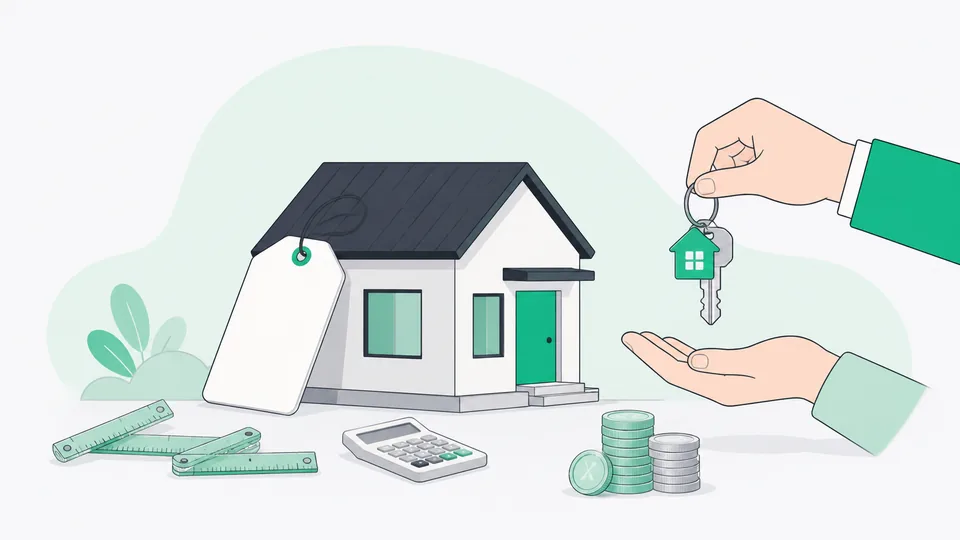

부동산 복비·취득세 계산기
집을 사고팔거나 전세·월세로 들어갈 때 나가는 돈은 중개보수와 취득세 두 덩어리입니다. 중개보수는 법이 정한 상한이 있고, 취득세는 집값 구간과 주택 수에 따라 1%에서 12%까지 벌어집니다. 두 금액을 한 화면에서 계산하세요.

중개보수는 협상 대상이지만, 상한은 넘을 수 없습니다
2021년 10월 19일부터 공인중개사법 시행규칙 별표가 바뀌면서 6억원 이상 고가 주택의 요율이 내려갔습니다. 지금의 상한요율은 아래 표와 같습니다. 중개사는 이 요율과 한도 안에서 의뢰인과 협의해 금액을 정하고, 매도인과 매수인 양쪽에서 각각 받습니다.
| 거래 | 거래금액 | 상한요율 | 한도액 |
|---|---|---|---|
| 매매·교환 | 5천만원 미만 | 0.6% | 25만원 |
| 매매·교환 | 5천만원 이상 ~ 2억원 미만 | 0.5% | 80만원 |
| 매매·교환 | 2억원 이상 ~ 9억원 미만 | 0.4% | — |
| 매매·교환 | 9억원 이상 ~ 12억원 미만 | 0.5% | — |
| 매매·교환 | 12억원 이상 ~ 15억원 미만 | 0.6% | — |
| 매매·교환 | 15억원 이상 | 0.7% | — |
| 임대차 등 | 5천만원 미만 | 0.5% | 20만원 |
| 임대차 등 | 5천만원 이상 ~ 1억원 미만 | 0.4% | 30만원 |
| 임대차 등 | 1억원 이상 ~ 6억원 미만 | 0.3% | — |
| 임대차 등 | 6억원 이상 ~ 12억원 미만 | 0.4% | — |
| 임대차 등 | 12억원 이상 ~ 15억원 미만 | 0.5% | — |
| 임대차 등 | 15억원 이상 | 0.6% | — |
한도액이 붙은 구간이 중요합니다. 4천만원짜리 원룸을 매매하면 0.6%인 24만원이라 한도(25만원) 안이지만, 5천만원 미만 거래는 금액이 조금만 커져도 한도 25만원에 걸립니다. 반대로 2억원 이상 구간부터는 한도가 없어 요율이 그대로 적용됩니다.
월세는 '보증금 + 월세 × 100'으로 환산합니다
전세는 보증금이 곧 거래금액이지만, 월세는 다릅니다. 법은 보증금 + (월차임 × 100)을 거래금액으로 봅니다. 이렇게 계산한 금액이 5천만원 미만이면 보증금 + (월차임 × 70)으로 다시 계산합니다. 보증금 1억원에 월세 100만원이면 거래금액은 2억원이 되어 임대차 0.3% 구간에 들어갑니다.
취득세 — 1주택 1~3%, 다주택은 8~12%
취득세는 지방세라서 매수자가 취득한 날부터 60일 안에 신고·납부합니다. 1주택 기준 세율은 6억원 이하 1%, 6억원 초과 9억원 이하 (취득가액 × 2/3억 − 3)% 누진, 9억원 초과 3%입니다. 여기에 지방교육세가 취득세액의 10%로 붙고, 전용면적 85㎡를 넘는 주택은 농어촌특별세 0.2%가 더해집니다.
| 구분 | 취득세 | 지방교육세 | 농특세 | 합계 |
|---|---|---|---|---|
| 6억원 이하 | 1% | 0.1% | 0 / 0.2% | 1.1 / 1.3% |
| 6억원 초과 ~ 9억원 이하 | 1~3% | 0.1~0.3% | 0 / 0.2% | 1.1~3.5% |
| 9억원 초과 | 3% | 0.3% | 0 / 0.2% | 3.3 / 3.5% |
| 조정대상지역 2주택 | 8% | 0.4% | 0 / 0.6% | 8.4 / 9.0% |
| 3주택 이상 | 8~12% | 0.4% | 0 / 0.6~1.0% | 8.4~13.4% |
다주택 중과는 조정대상지역 여부로 갈립니다. 2025년 10월 15일 대책 이후 서울 25개 자치구 전역과 경기 일부가 다시 조정대상지역으로 묶였으므로, 서울에서 두 번째 집을 사는 경우 8%가 적용될 가능성이 큽니다. 정확한 지역 지정은 계약 전에 확인해야 합니다.
복비·취득세 계산기
거래 종류와 금액을 넣으면 중개보수 상한과 취득세·지방교육세·농어촌특별세를 함께 계산합니다.
거래 종류와 금액
실제 거래된 금액(또는 매매 예정가)을 넣으세요.
월세가 없으면 0으로 두세요.
오피스텔은 전용 85㎡ 이하 주거용 기준입니다.
주택이 아니면 취득세율도 달라집니다.
중개사 과세 유형
개인 간 주택 임대차는 세금계산서를 발행하지 않아 부가세를 따로 받지 않는 경우가 많습니다. 계약 전 중개사에 확인하세요.
취득세 조건 (매매만)
계산 결과
취득세 계산 내역
중개보수 요율 구간 비교
계약 전에 확인할 것
- ①부가세 포함 금액으로 협의하세요. 10%가 붙으면 중개보수가 10% 커집니다.
- ②매매와 임대차를 동시에 중개한 경우 매매 보수만 받는 것이 원칙입니다.
- ③취득세는 60일 이내 신고·납부해야 합니다. 잔금일과 등기일을 함께 확인하세요.
- ④다주택 중과는 지역 지정이 바뀌면 금액이 두 배 이상 달라집니다. 계약 전 조정대상지역 여부를 확인하세요.
계산 기준·한계
중개보수 — 공인중개사법 시행규칙 별표1(2021.10.19 시행)의 주택 상한요율과 한도액. 월세 거래금액 = 보증금 + 월세×100, 그 합이 5천만원 미만이면 보증금 + 월세×70으로 재계산. 주거용 오피스텔은 매매 0.5%·임대차 0.4%, 상가·토지는 0.9% 이내 협의로 계산했습니다.
취득세 — 1주택 6억원 이하 1%, 6억~9억원 (취득가액×2/3억−3)%, 9억원 초과 3%. 조정대상지역 2주택 8%, 3주택 이상 12%(비조정지역 3주택 8%). 지방교육세는 일반 1~3% 구간에서 취득세액의 10%, 중과 구간은 0.4%. 농어촌특별세는 85㎡ 초과 시 일반 0.2%, 중과 (세율−2%)×10%입니다.
포함하지 않은 것 — 법무사 비용, 등기 비용, 국민주택채권 매입·할인, 중도금·잔금 일정에 따른 가산세, 일시적 2주택 특례, 상속·증여 취득, 토지·상가의 개별 세율, 지자체별 조례 차이는 반영하지 않았습니다.
주의 — 생애최초 감면은 2025년 12월 31일까지 적용된 한시 제도이고, 조정대상지역 지정은 수시로 바뀝니다. 실제 금액은 관할 시·군·구 세무 부서와 중개사가 확인한 금액이 기준입니다.
계산 결과는 예상치이며, 실제 중개보수는 협의로, 취득세는 관할 지자체 고지로 확정됩니다.
결과 읽는 법
중개보수는 상한선이고, 취득세는 정해진 세율입니다. 그래서 이 계산기에서 실제로 협상할 수 있는 숫자는 왼쪽(중개보수)뿐입니다.
| 지표 | 의미 | 활용 |
|---|---|---|
| 중개보수 상한 | 법이 허용하는 최대 금액 | 협의의 출발점 |
| 부가세 | 중개사 과세 유형에 따른 추가액 | 계약서에 포함인지 확인 |
| 취득세 본세 | 집값 × 세율 | 잔금일에 준비할 현금 |
| 지방교육세·농특세 | 취득세에 딸려 붙는 세금 | 총 취득 비용 산정 |
사례 — 6억 매매 / 3억 전세 / 보증금 1억 + 월세 100만
| 항목 | 매매 6억 | 전세 3억 | 월세 1억/100만 |
|---|---|---|---|
| 거래금액 | 6억원 | 3억원 | 2억원 (환산) |
| 상한요율 | 0.4% | 0.3% | 0.3% |
| 중개보수 | 240만원 | 90만원 | 60만원 |
| 부가세 10% 포함 | 264만원 | 99만원 | 66만원 |
| 취득세 (1주택) | 660만원 | — | — |
| 거래 비용 합계 | 924만원 | 99만원 | 66만원 |
전세와 월세는 취득세가 없습니다. 대신 전입신고와 확정일자를 받아야 보증금을 지킬 수 있고, 월세는 중개보수 외에 보증금 반환 보증료가 따로 들 수 있습니다. 매매에서 6억원 주택의 취득세 660만원은 1% + 지방교육세 0.1%이고, 전용면적이 85㎡를 넘으면 농어촌특별세 0.2%(120만원)가 더 붙어 780만원이 됩니다.
9억원 주택이라면 중개보수는 0.5%인 450만원(부가세 포함 495만원), 취득세는 3%로 2,700만원, 지방교육세 270만원, 농특세 180만원(85㎡ 초과)까지 3,150만원입니다. 같은 서울의 아파트라도 6억원과 9억원 사이에서 취득세가 5배 가까이 벌어집니다.
자주 묻는 질문
Q중개보수를 꼭 상한요율까지 내야 하나요?▾
아니요. 상한요율은 법이 정한 최대치이고, 실제 금액은 중개의뢰인과 중개사가 협의해 정합니다. 다만 상한을 넘겨 받을 수는 없습니다. 이 계산기는 넘을 수 없는 선을 보여 주는 도구입니다.
Q월세 계약의 거래금액은 어떻게 계산하나요?▾
보증금에 월세의 100배를 더합니다. 그렇게 계산한 금액이 5천만원 미만이면 다시 보증금에 월세의 70배를 더한 금액을 거래금액으로 씁니다. 이 계산기는 두 단계를 자동으로 적용합니다.
Q중개보수에 부가세가 붙나요?▾
중개사의 과세 유형과 거래 종류에 따라 다릅니다. 일반과세 사업자와의 거래는 중개보수의 10%, 간이과세자는 4% 수준이 붙습니다. 개인 간 주택 임대차처럼 세금계산서를 발행하지 않는 거래는 부가세를 따로 받지 않는 경우가 많습니다.
Q취득세는 집값에 몇 퍼센트인가요?▾
1주택 기준으로 6억원 이하는 1%, 6억원 초과 9억원 이하는 1~3% 누진, 9억원 초과는 3%입니다. 여기에 지방교육세가 취득세의 10%, 전용면적 85제곱미터 초과 주택은 농어촌특별세 0.2%가 더 붙습니다.
Q생애최초 취득세 감면은 지금도 받을 수 있나요?▾
생애최초 주택 구입 취득세 감면은 2025년 12월 31일까지 적용되는 한시 제도였고, 취득가액 12억원 이하 주택에 최대 200만원까지 감면합니다. 연장 여부와 세부 요건은 신청 전 관할 시·군·구 세무 부서에서 확인해야 합니다.
참고한 기준
- 공인중개사법 제32조, 같은 법 시행규칙 제20조 및 별표1(주택 중개보수 상한요율, 2021.10.19 시행)
- 지방세법 제11조(부동산 취득세율), 제151조(지방교육세), 농어촌특별세법 제5조
- 지방세특례제한법 — 생애최초 주택 구입 취득세 감면(2025.12.31까지)
- 국토교통부 조정대상지역 지정 고시(2025.10.15 대책 반영)
※ 이 페이지는 일반적인 정보이며 특정 중개사나 상품을 추천하지 않습니다. 계약 전 중개보수 약정서와 지자체 취득세 안내를 확인하세요.